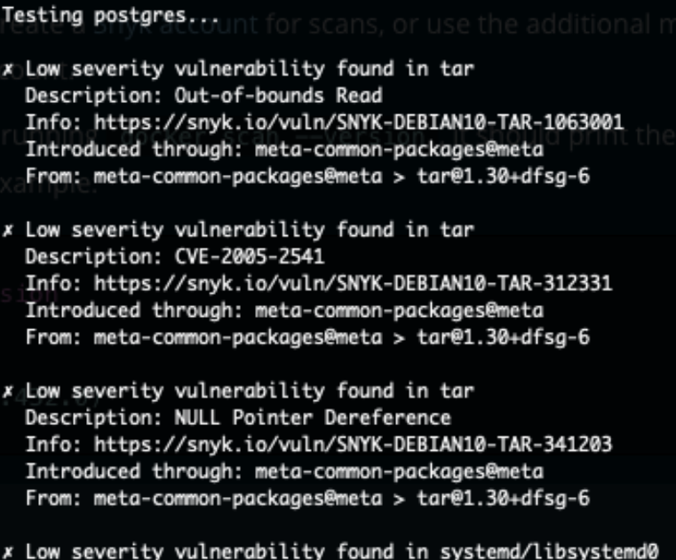

Intro
Now this Post is a tiny bit different, although still about working with data, and with a focus on security.
But this time around, if you’ve followed a bit the Blog, we have a few “Docker” containers running on different machines, to work on security data. That’s very cool, but… What about the security OF these containers?
Let’s get to it
OK so the other day (weeks ago actually) a colleague showed me his Debian container was found to be insecure, and in doing so, he showed me about “Trivy”. So this (free) Aquasec tool is supposed to be able to detect, in seconds, some vulnerabilities in Containers images. And that’s… Interesting to say the least.
In looking into it, I also came across the “native” alternative (well, not so native, but almost):
docker scanFunction, so we might want to try that too. Docker scan however requires a Docker account and a connection, while trivy, once installed, can be run locally as far as I have been able to check.
sudo docker pull aquasec/trivy
mkdir trivy_cache
cd trivy_cacheLet’s check some containers, shall we?
sudo docker run --rm -v /var/run/docker.sock:/var/run/docker.sock -v $PWD:/root/.cache/ aquasec/trivy caffix/amass
Note to self: NO detection in ANY test involving Alpine containers so far… Weird? Or even cooler than before (Alpine is already very lightweight… Now if it also seems generally secure…). CVE-based detections is apparently tricky. Another colleague explained to me a bit about it, and it seems it is far from perfect. It can be prone to false-positives, and/or false-negatives, so a quick reminder: This Blog post is about ONE kind of checks, but it is NOT about EXHAUSTIVE security checks 😉
Let’s test our latest container (upcoming posts on the subject of Postgres):
sudo docker run --rm -v $PWD:/root/.cache/ aquasec/trivy postgresNow that gives 130, 19, 32 high & 2 Critical… Not cool.
So let’s try to upgrade the OS maybe? In a Dockerfile:
FROM postgres
RUN apt-get update
RUN apt-get dist-upgrade -yLet’s build that:
sudo docker build -t local/postgres_update .Then we run the command locally (using docker.sock):
sudo docker run --rm -v /var/run/docker.sock:/var/run/docker.sock -v $PWD:/root/.cache/ aquasec/trivy local/postgres_updateDoesn’t make any difference at all, unfortunately… (And postgres was indeed upgraded, which is good, but apparently not enough…). Maybe I’ll need to remove something from that container to improve things a bit? I don’t know. Let’s keep going
What if we check it with “docker scan” instead of trivy?
So first here we need to login to Docker Hub:
docker loginThen
docker scan postgres(If you see a warning about Snyk and you are CERTAIN there is nothing sensitive in your docker image, I guess it’s safe to go ahead…)
And indeed, a loooong output:

The output finishes with what I consider rather bad news:

Now, with such results (and it seems to be pretty common among debian-based images out there, although I’m not certain why…), one would have to consider seriously whether or not to use such a container. Again, keep in mind, CVE-based detection might not be perfect.
Pros- & Cons-? Pro: Clearly, having a container working from a simple “docker pull” is great. Cons: Well, are we reaaaally exposed here?
Let’s see:
My containers run in a machine (the “Home Lab Server”) that is creating its own home-only small wifi network, uses a firewall (iptables) so that only “internal” machines correctly logged onto that Wifi can see those containers, and also… Almost all that is on the Home Lab Server I actually publish on the Internet in one way or another.
So? I can still play around with this container at home. But should I need to use something similar in a different setup, I’d definitely would need to ensure it is in a controlled environment… And then I looked a bit more into it. It turns out someone at the Postgres community thought it’d be cool to have an Alpine-based container… Could this be the answer?
We already know Alpine-based containers are generally smaller… Let’s go for it then:
docker pull postgres:alpineUp front, it’s 160 MB in size compared to 314MB… Good.
But even better:

I feel (somewhat) relieved… That I could use at work. (Good, I was starting to worry ;))
Also, trivy seems to agree with Docker Scan:

Bonus
What about our RStudio Env:
sudo docker run --rm -v /var/run/docker.sock:/var/run/docker.sock -v $PWD:/root/.cache/ aquasec/trivy rocker_base0033 Highs, no Critical… And from Docker Scan:

That’s not perfect, but with no high vulnerabilities & more dependencies checked, I’d say that’s much better than the postgres container 🙂
Conclusions
Using Docker is great. I am a big fan (I know, it’s obvious, if you’re a reader of the Blog). But then one needs to think of the security aspects of it all.
One (DEFINITELY NOT complete nor perfect) way to go about it is to look for more secure images. To do so, you need to be able to check whether an image has any red-flags. In CI, you would probably not want to deploy anything with known critical vulnerabilities, and so you would add a check upon deployments and stop anything looking really bad.
Once you know where you stand, you’re better off.
And now you can actually look for alternative images when you think you need to.